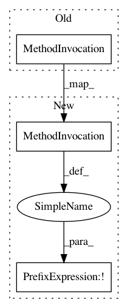

d81ee18bd7d43479784116c40c9b08eb6bb36cc9,data_handler.py,data_processor,validate_prepro,#data_processor#,185
Before Change
else:
prepro_vals["bin_range"] = int(prepro_vals["bin_range"])
if(os.path.isfile(self.folders_for_data["old"]+"/"+prepro_vals["original_file"]) == False):
error = "File does not exist or is not in "+self.folders_for_data["old"]+" folder"
if(prepro_vals["target_type"] == "--select--"):
After Change
else:
prepro_vals["bin_range"] = int(prepro_vals["bin_range"])
if not os.path.isfile(self.folders_for_data["old"] + "/" +
prepro_vals["original_file"]):
error = "File does not exist or is not in " + self.folders_for_data[
"old"] + " folder"
In pattern: SUPERPATTERN
Frequency: 1
Non-data size: 3
Instances
Project Name: casparwylie/Perceptron
Commit Name: d81ee18bd7d43479784116c40c9b08eb6bb36cc9
Time: 2020-07-03
Author: caspar@phntms.com
File Name: data_handler.py
Class Name: data_processor
Method Name: validate_prepro